Across the sunset salt pans
Scrub or play a rightward journey past the Sečovlje salt pans. The grass lane carries the party while the shore, pans, clouds and close marsh plants move at different depths.
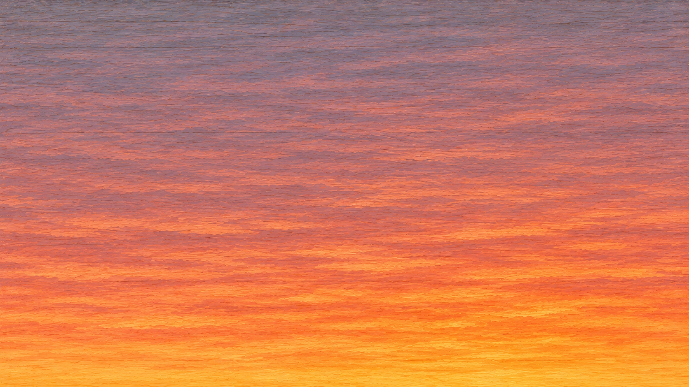
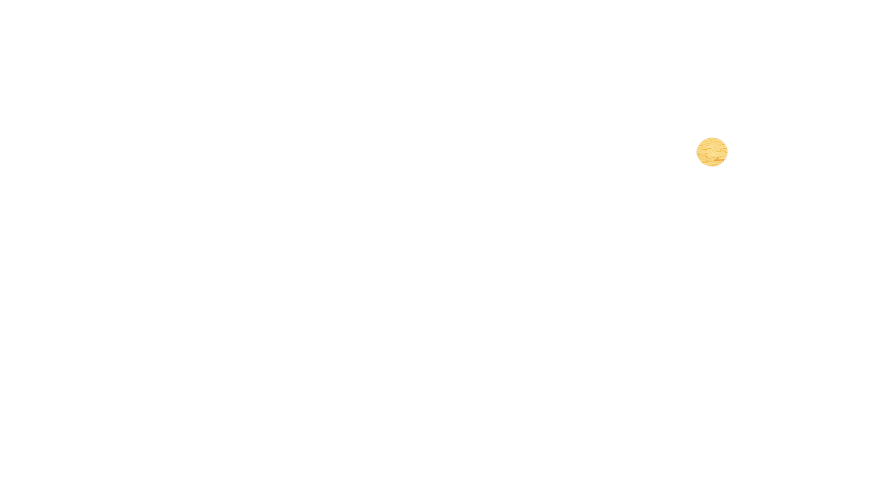
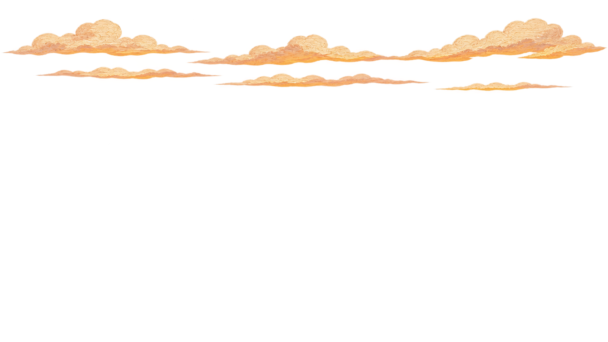
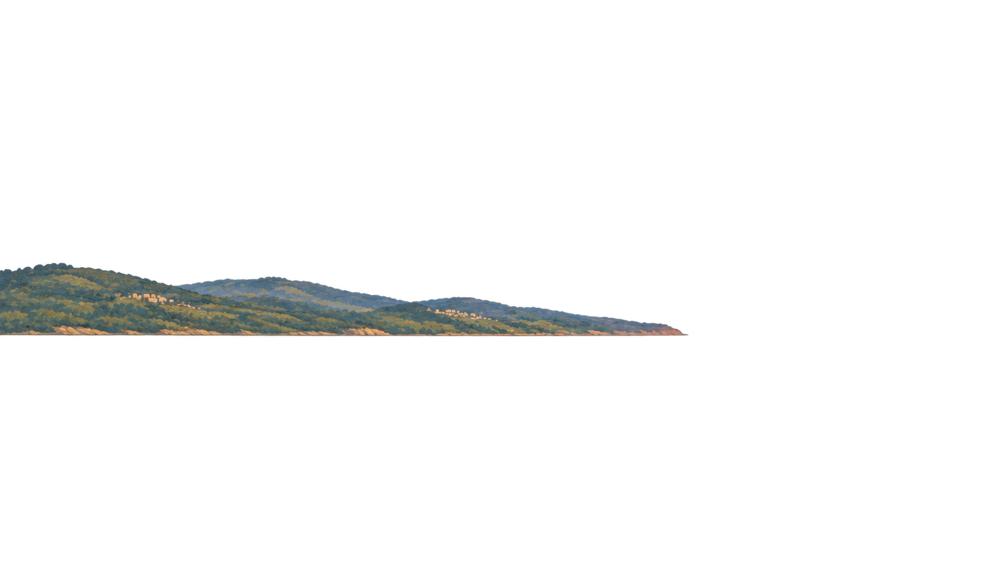
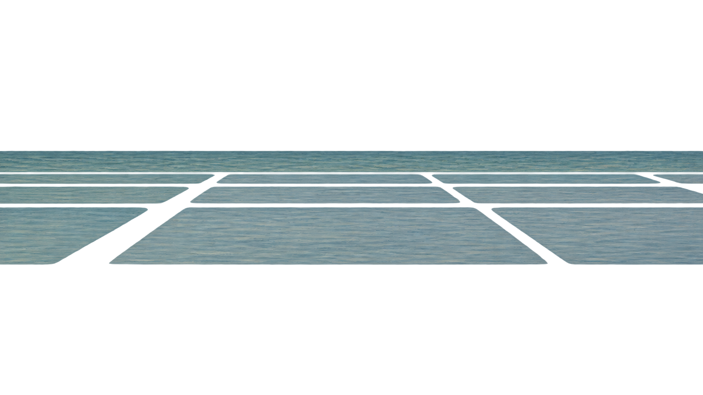
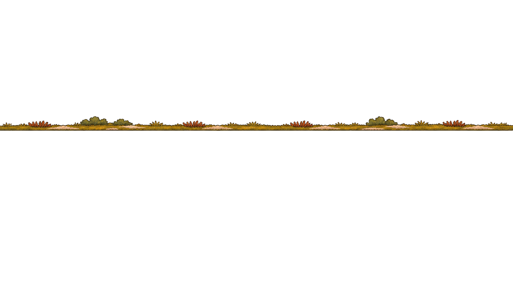
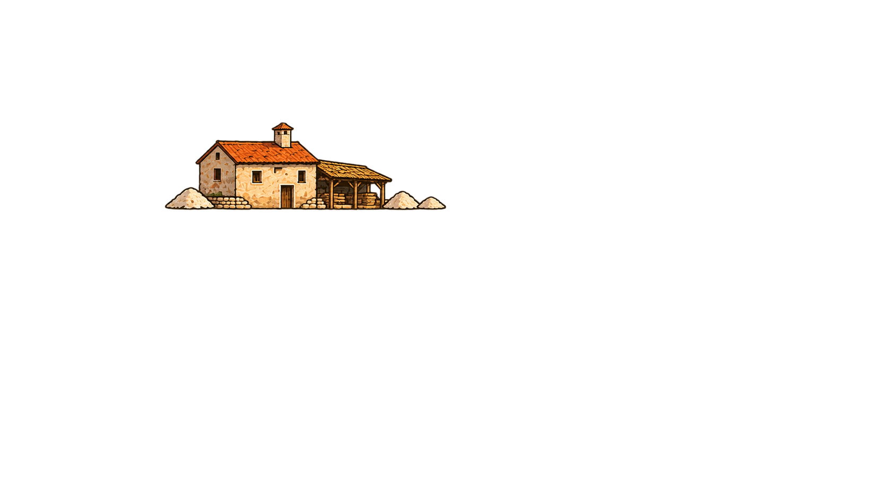
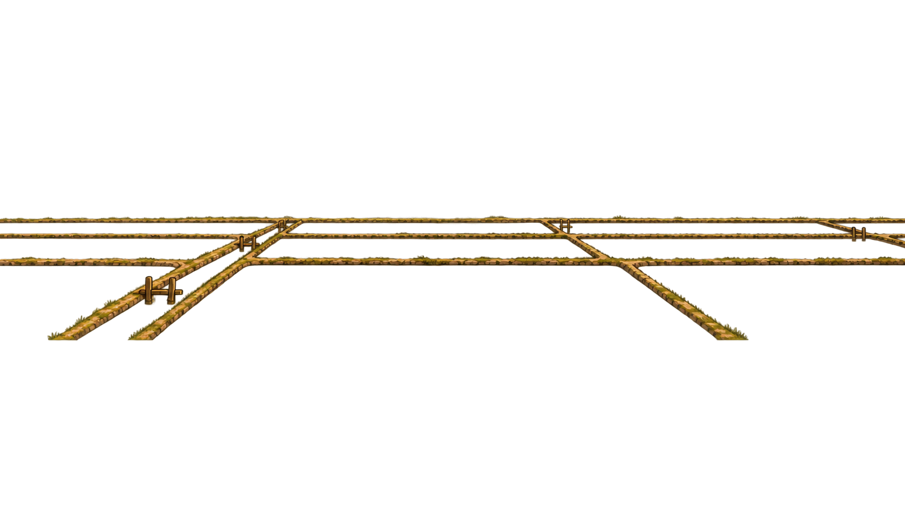
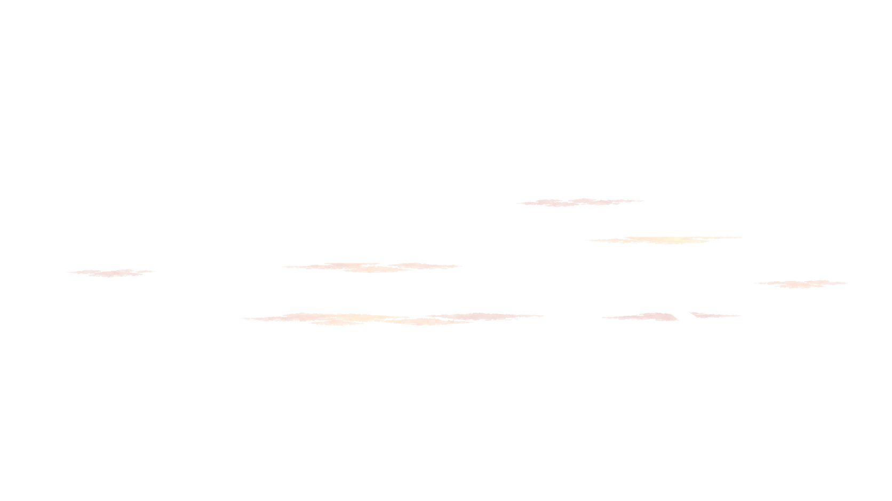
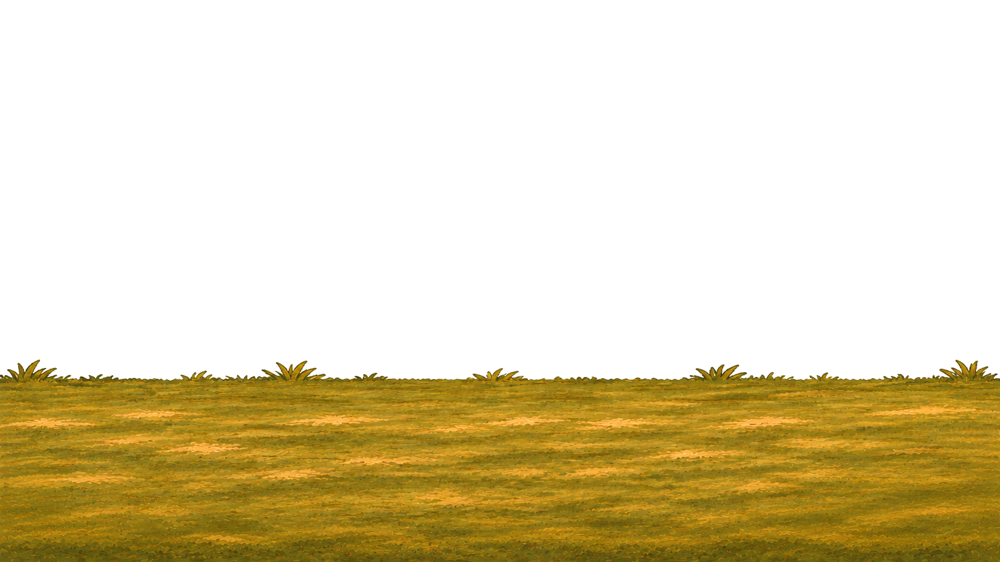

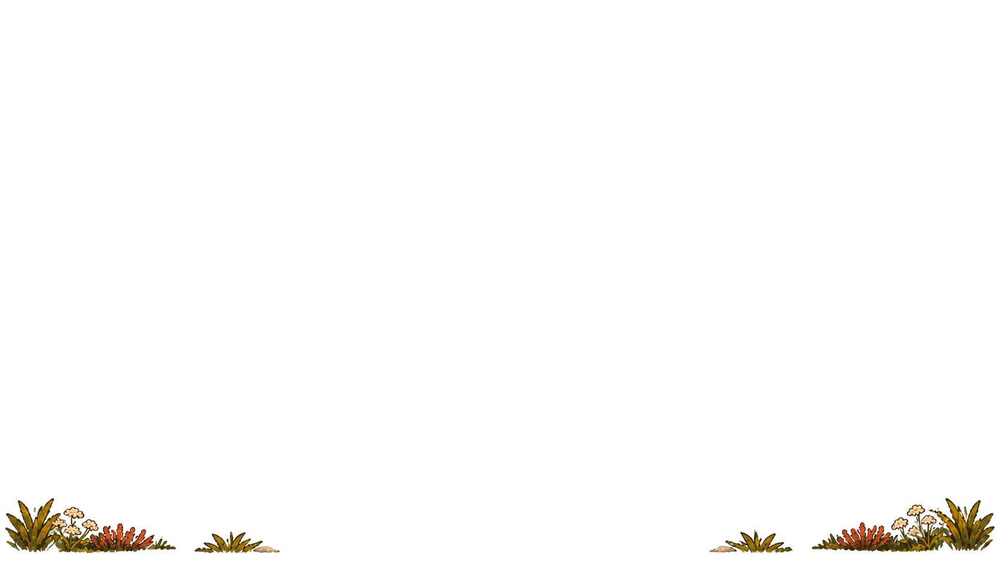
How the speeds work: the grassy lane is the 1.0× reference. Close salt grass moves at 1.25×, so it passes a little faster and feels near the camera. The basin water and embankments move around 0.5×, the house and near shore around 0.3×, distant Istrian hills at 0.12×, and the sky, sun and clouds around 0.02–0.03×. The slow cloud drift and faint reflection shimmer are separate ambient motion. These first-pass ratios need a full pan and mobile-crop review; if the close grass feels detached from the lane, reduce it toward 1.1×.
Open the static layer composite · See the approved Piran preview